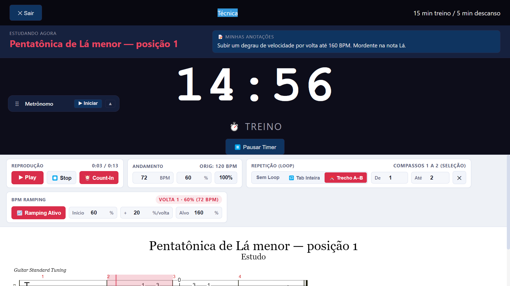
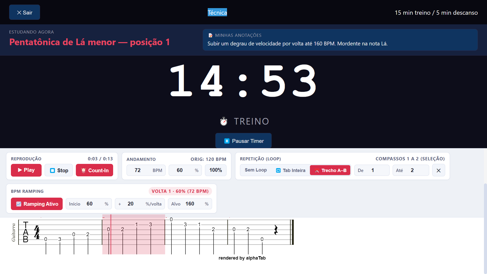
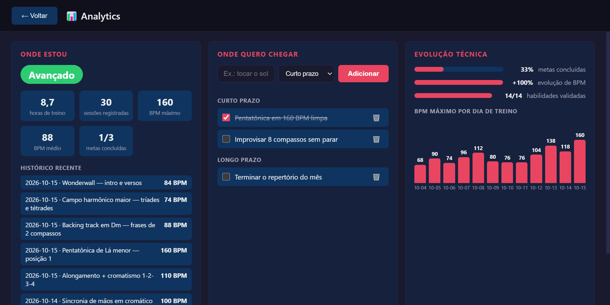
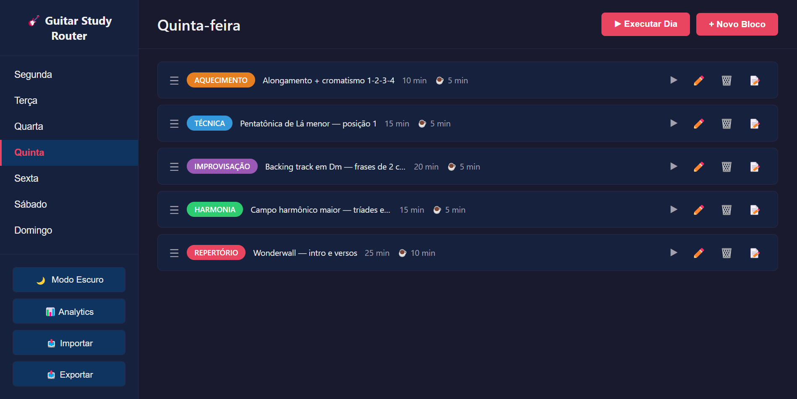
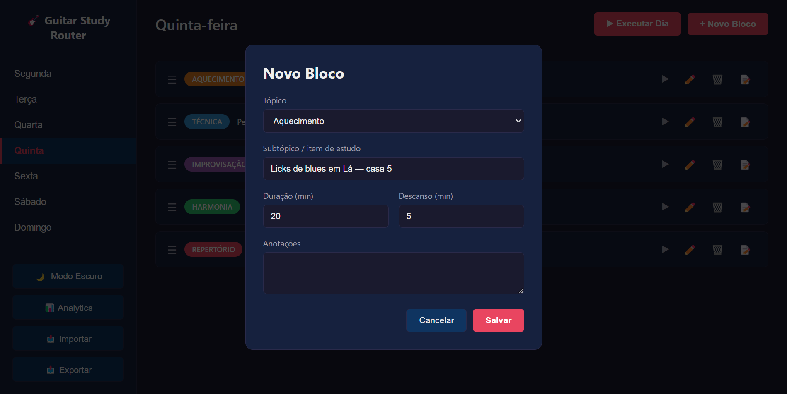

Cronograma semanal, Modo Foco com cronômetro e metrônomo, player de tablatura com loop e ramping de velocidade, áudio de referência com transposição offline e painel de analytics. Tudo num único app desktop.



Feito para quem estuda sozinho e quer saber o quê praticar, quanto tempo e em que velocidade.
Monte a semana com 7 dias. Cada dia tem uma fila de blocos de estudo — tópico, subtópico, duração, descanso e anotações.
Execute um bloco ou o dia inteiro com cronômetro grande, metrônomo, tablatura e áudio de referência lado a lado.
Acompanhe o nível técnico, horas de treino, habilidades validadas e a evolução do BPM ao longo do tempo.
Funcionalidades pensadas para quem pratica guitarra sozinho, com método e métricas reais.
Sete dias (Segunda a Domingo), cada um com uma fila de blocos de estudo. Crie, edite, exclua e reordene blocos com arrastar e soltar. Tópicos: Aquecimento, Técnica, Improvisação, Harmonia e Repertório. Importa e exporta o cronograma completo em JSON.
Execute um bloco ou o dia inteiro em sequência. Cronômetro grande de treino e descanso, metrônomo com Web Audio API, subtópico editável ao vivo e anotações salvas do bloco.
Renderiza arquivos Guitar Pro (.gp3, .gp4, .gp5, .gpx, .gp) com alphaTab — tablatura, partitura e playback offline (soundfont embutido). Cursor de acompanhamento, loop A–B, count-in e mixer de trilhas (mute/solo).
Treino progressivo: a cada volta do loop o player sobe um passo de velocidade até o alvo definido. Início %, incremento por volta e teto %, com leitura viva da velocidade atual.
Player de áudio para gravação de referência do bloco (mp3, wav, ogg, m4a, flac, opus…). Transposição offline (WSOLA) — troca o tom sem alterar o tempo — e ajuste de andamento preservando o tom. Loop A–B no próprio áudio.
Ao terminar o treino, registre BPM máximo e anotações. Cada fechamento gera uma métrica no histórico. O painel Analytics mostra nível técnico, horas de treino, habilidades validadas, metas e gráfico de evolução.
Capturas reais da interface do Guitar Routine.


Escolha a versão para o seu sistema operacional. O app é gratuito, código aberto (MIT) e funciona totalmente offline.
Observações importantes:
--appimage-extract-and-run). O pacote .deb requer dpkg.